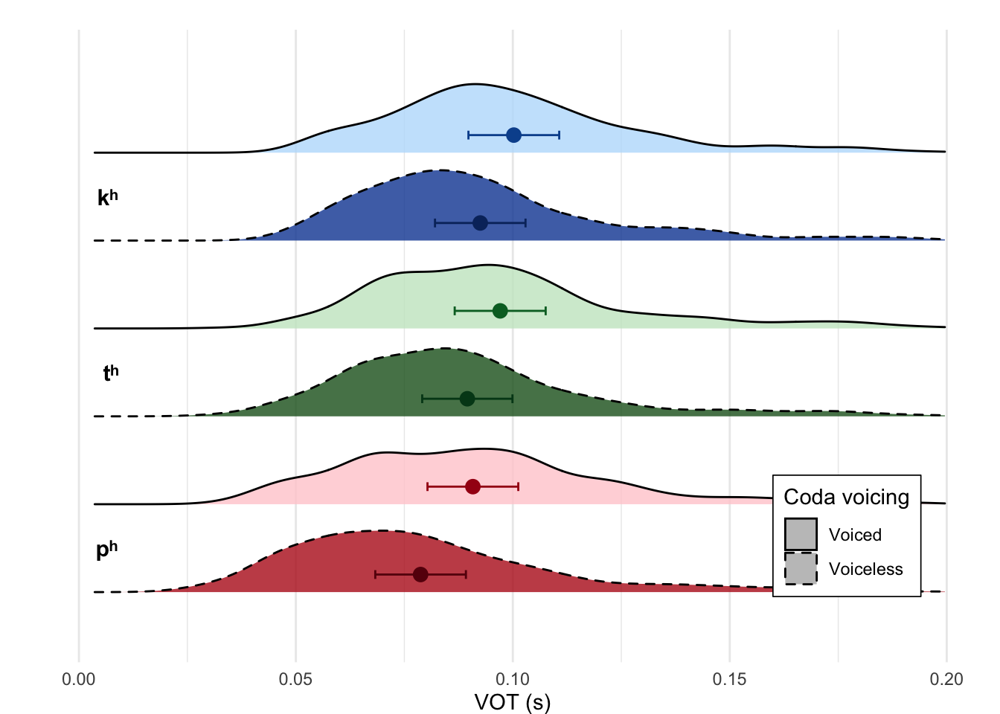
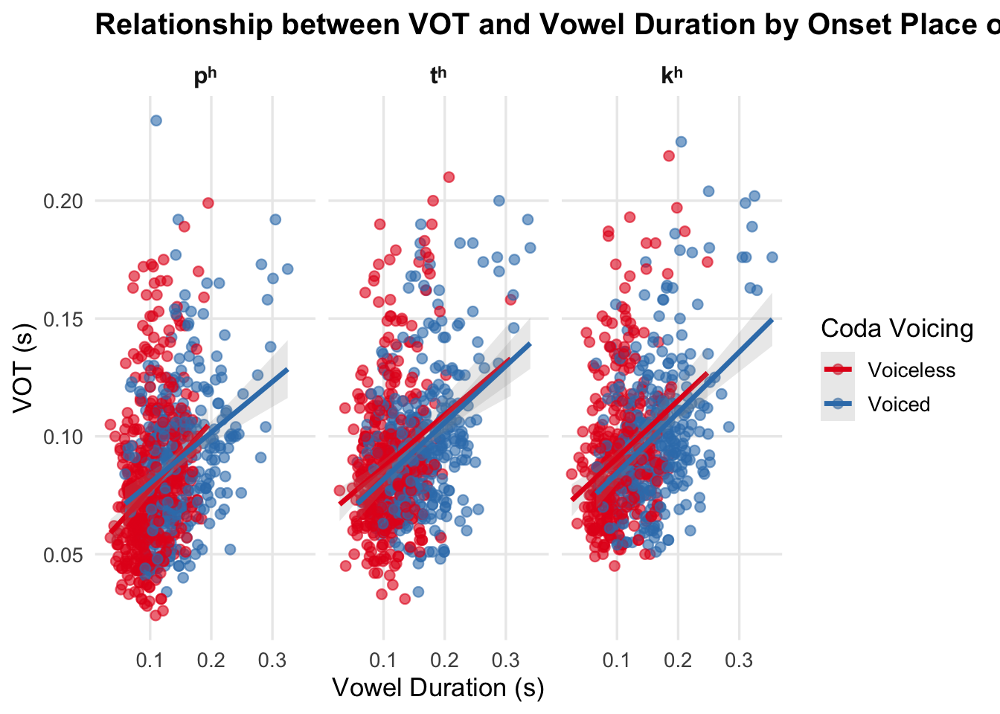

Production_stats
2026-01-08
production <- read.csv("/Users/chandan/Desktop/GitHub/Burst_voice/Data/data_12-11-24.csv", header=TRUE)
production$coda_vc <- as.character(data$coda_vc) #change class of coda_vc
production$ons_poa <- as.character(data$ons_poa) #change class of ons_poa
production$vot_ratio <- (data$vot)/(data$vdur)
production$CVdur <- data$vot + data$vdur
number_of_subs <- length(unique(production$sub))
number_of_subs## [1] 20library(ggplot2)
library(tidyverse)
library(dplyr)
library(dplyr)
library(knitr)
summary_table <- production %>%
group_by(ons_poa, coda_vc) %>%
summarise(
mean_vot = mean(vot, na.rm = TRUE),
mean_vot_ratio = mean(vot_ratio, na.rm = TRUE),
mean_CVdur = mean(CVdur, na.rm = TRUE),
.groups = "drop"
)
print(summary_table)## # A tibble: 6 × 5
## ons_poa coda_vc mean_vot mean_vot_ratio mean_CVdur
## <chr> <chr> <dbl> <dbl> <dbl>
## 1 1 0 0.0787 0.810 0.183
## 2 1 1 0.0908 0.652 0.240
## 3 2 0 0.0894 0.875 0.200
## 4 2 1 0.0971 0.631 0.261
## 5 3 0 0.0925 0.951 0.199
## 6 3 1 0.100 0.659 0.262kable(summary_table, digits = 2,
col.names = c("Coda VC", "Onset POA", "Mean VOT", "Mean VOT Ratio", "Mean CV Duration"))| Coda VC | Onset POA | Mean VOT | Mean VOT Ratio | Mean CV Duration |
|---|---|---|---|---|
| 1 | 0 | 0.08 | 0.81 | 0.18 |
| 1 | 1 | 0.09 | 0.65 | 0.24 |
| 2 | 0 | 0.09 | 0.88 | 0.20 |
| 2 | 1 | 0.10 | 0.63 | 0.26 |
| 3 | 0 | 0.09 | 0.95 | 0.20 |
| 3 | 1 | 0.10 | 0.66 | 0.26 |
library(lme4)
library(ggplot2)
library(dplyr)
library(ggridges)
# Fit mixed effects model
model_prod_lmer <- lmer(vot ~ ons_poa * coda_vc + (1|sub) + (1|word),
data = production)
# Print model summary
summary(model_prod_lmer)## Linear mixed model fit by REML ['lmerMod']
## Formula: vot ~ ons_poa * coda_vc + (1 | sub) + (1 | word)
## Data: production
##
## REML criterion at convergence: -12231.1
##
## Scaled residuals:
## Min 1Q Median 3Q Max
## -3.8998 -0.6529 -0.0610 0.5438 5.6970
##
## Random effects:
## Groups Name Variance Std.Dev.
## word (Intercept) 3.991e-05 0.006317
## sub (Intercept) 5.507e-04 0.023468
## Residual 2.990e-04 0.017292
## Number of obs: 2369, groups: word, 63; sub, 20
##
## Fixed effects:
## Estimate Std. Error t value
## (Intercept) 0.078743 0.005563 14.156
## ons_poa2 0.010772 0.002781 3.874
## ons_poa3 0.013751 0.002857 4.813
## coda_vc1 0.012052 0.003058 3.942
## ons_poa2:coda_vc1 -0.004479 0.004314 -1.038
## ons_poa3:coda_vc1 -0.004317 0.004404 -0.980
##
## Correlation of Fixed Effects:
## (Intr) ons_p2 ons_p3 cd_vc1 o_2:_1
## ons_poa2 -0.220
## ons_poa3 -0.214 0.428
## coda_vc1 -0.200 0.400 0.389
## ons_p2:cd_1 0.142 -0.645 -0.276 -0.709
## ons_p3:cd_1 0.139 -0.278 -0.649 -0.694 0.492# Get predicted values for each combination
pred_data <- expand.grid(
ons_poa = c("1", "2", "3"),
coda_vc = unique(production$coda_vc)
)
pred_data$predicted_vot <- predict(model_prod_lmer, newdata = pred_data, re.form = NA)
# Calculate standard errors
X <- model.matrix(~ ons_poa * coda_vc, data = pred_data)
pred_data$se <- sqrt(diag(X %*% vcov(model) %*% t(X)))
pred_data$lower <- pred_data$predicted_vot - 1.96 * pred_data$se
pred_data$upper <- pred_data$predicted_vot + 1.96 * pred_data$se
# Create poa_coda variable (combining onset and coda)
pred_data$poa_coda <- paste0(pred_data$coda_vc, ".",
c("p", "t", "k")[as.numeric(pred_data$ons_poa)])
# Reorder factor levels: within each POA, voiceless (0) below voiced (1)
pred_data$poa_coda <- factor(pred_data$poa_coda,
levels = c("0.p", "1.p", "0.t", "1.t", "0.k", "1.k"))
# Prepare actual data with poa_coda variable
production_plot <- production %>%
mutate(
poa_coda = paste0(coda_vc, ".",
c("p", "t", "k")[as.numeric(ons_poa)]),
poa_coda = factor(poa_coda,
levels = c("0.p", "1.p", "0.t", "1.t", "0.k", "1.k")),
coda_vc_factor = ifelse(coda_vc == "0", "Voiceless", "Voiced")
)
# Create the plot
production_lmer_plot <- ggplot() +
# Ridged density plot of actual data
geom_density_ridges(data = production_plot,
aes(x = vot, y = poa_coda, fill = poa_coda,
linetype = coda_vc_factor),
alpha = 0.8, scale = 0.8) +
scale_linetype_manual(name = "Coda voicing",
values = c("Voiceless" = "dashed", "Voiced" = "solid")) +
# Overlay predictions
geom_point(data = pred_data,
aes(x = predicted_vot, y = poa_coda, color = poa_coda),
size = 3, position = position_nudge(y = 0.2)) +
geom_errorbarh(data = pred_data,
aes(x = predicted_vot, y = poa_coda,
xmin = lower, xmax = upper, color = poa_coda),
height = 0.1, position = position_nudge(y = 0.2)) +
# Custom colors
scale_fill_manual(values = c("0.p" = "#B71C1C", "1.p" = "#FFCDD2",
"0.t" = "#1B5E20", "1.t" = "#C8E6C9",
"0.k" = "#0D47A1", "1.k" = "#BBDEFB")) +
scale_color_manual(values = c("0.p" = "#67000D", "1.p" = "#A50F15",
"0.t" = "#00441B", "1.t" = "#006D2C",
"0.k" = "#08306B", "1.k" = "#08519C")) +
# Add POA labels on the left
annotate("text", x = 0.01, y = 1.5, label = "pʰ", hjust = 1.2, vjust = 0.5,
size = 4, fontface = "bold") +
annotate("text", x = 0.01, y = 3.5, label = "tʰ", hjust = 1.2, vjust = 0.5,
size = 4, fontface = "bold") +
annotate("text", x = 0.01, y = 5.5, label = "kʰ", hjust = 1.2, vjust = 0.5,
size = 4, fontface = "bold") +
# Formatting
labs(x = "VOT (s)", y = "") +
xlim(0, 0.2) +
coord_cartesian(ylim = c(0.5, 6.5)) +
theme_minimal() +
guides(fill = "none", color = "none",
linetype = guide_legend(title = "Coda voicing", direction = "vertical")) +
theme(axis.text.y = element_blank(),
axis.ticks.y = element_blank(),
legend.position = c(0.85, 0.20),
legend.background = element_rect(fill = "white", color = "black", size = 0.3),
panel.grid.major.y = element_blank(),
panel.grid.minor.y = element_blank(),
plot.margin = margin(t = 15, r = 5, b = 0, l = 5, unit = "pt")) +
scale_y_discrete(expand = expansion(mult = c(0.05, 0.15)))
production_lmer_plot## Picking joint bandwidth of 0.00679## `height` was translated to `width`.
print(production_lmer_plot)## Picking joint bandwidth of 0.00679
## `height` was translated to `width`.
ggsave("production_lmer_plot.png", plot = production_lmer_plot, dpi=300, width=8, units ="in")## Saving 8 x 5 in image
## Picking joint bandwidth of 0.00679
##
## `height` was translated to `width`.# Vdur x VOT scatterplot
library(ggplot2)
library(dplyr)
# Prepare data with factor labels
production_plot <- production %>%
mutate(
coda_vc_label = factor(coda_vc,
levels = c("0", "1"),
labels = c("Voiceless", "Voiced")),
ons_poa_label = factor(ons_poa,
levels = c("1", "2", "3"),
labels = c("pʰ", "tʰ", "kʰ"))
)
# Create scatterplot
ggplot(production_plot, aes(x = vdur, y = vot, color = coda_vc_label)) +
geom_point(alpha = 0.6, size = 2) +
geom_smooth(method = "lm", se = TRUE, linewidth = 1.2, alpha = 0.2) +
facet_wrap(~ ons_poa_label, nrow = 1) +
labs(
title = "Relationship between VOT and Vowel Duration by Onset Place of Articulation",
x = "Vowel Duration (s)",
y = "VOT (s)",
color = "Coda Voicing"
) +
theme_minimal(base_size = 13) +
theme(
plot.title = element_text(face = "bold", size = 15),
legend.position = "right",
panel.grid.minor = element_blank(),
strip.text = element_text(face = "bold", size = 12)
) +
scale_color_brewer(palette = "Set1")## `geom_smooth()` using formula = 'y ~ x'
# VOT ratio
model_votratio_lmer <- lmer(vot_ratio ~ ons_poa * coda_vc + (1|sub) + (1|word),
data = production)
# Print model summary
summary(model_votratio_lmer)## Linear mixed model fit by REML ['lmerMod']
## Formula: vot_ratio ~ ons_poa * coda_vc + (1 | sub) + (1 | word)
## Data: production
##
## REML criterion at convergence: 29.5
##
## Scaled residuals:
## Min 1Q Median 3Q Max
## -2.8035 -0.6111 -0.0755 0.4503 9.5847
##
## Random effects:
## Groups Name Variance Std.Dev.
## word (Intercept) 0.01973 0.1405
## sub (Intercept) 0.03739 0.1934
## Residual 0.05283 0.2298
## Number of obs: 2366, groups: word, 63; sub, 20
##
## Fixed effects:
## Estimate Std. Error t value
## (Intercept) 0.81032 0.05811 13.945
## ons_poa2 0.06706 0.05852 1.146
## ons_poa3 0.14193 0.06013 2.360
## coda_vc1 -0.15653 0.06436 -2.432
## ons_poa2:coda_vc1 -0.08020 0.09025 -0.889
## ons_poa3:coda_vc1 -0.13527 0.09271 -1.459
##
## Correlation of Fixed Effects:
## (Intr) ons_p2 ons_p3 cd_vc1 o_2:_1
## ons_poa2 -0.443
## ons_poa3 -0.431 0.428
## coda_vc1 -0.403 0.400 0.389
## ons_p2:cd_1 0.287 -0.648 -0.278 -0.713
## ons_p3:cd_1 0.280 -0.278 -0.649 -0.694 0.495library(emmeans)## Welcome to emmeans.
## Caution: You lose important information if you filter this package's results.
## See '? untidy'emmeans(model_votratio_lmer, ~ coda_vc)## Cannot use mode = "kenward-roger" because *pbkrtest* package is not installed
## NOTE: Results may be misleading due to involvement in interactions## coda_vc emmean SE df lower.CL upper.CL
## 0 0.880 0.0498 31.7 0.778 0.982
## 1 0.652 0.0515 35.4 0.547 0.756
##
## Results are averaged over the levels of: ons_poa
## Degrees-of-freedom method: satterthwaite
## Confidence level used: 0.95# Full CV
production$CV <- (data$vot)+(data$vdur)
model_CV_lmer <- lmer(CV ~ ons_poa * coda_vc + (1|sub) + (1|word),
data = production)
summary(model_CV_lmer)## Linear mixed model fit by REML ['lmerMod']
## Formula: CV ~ ons_poa * coda_vc + (1 | sub) + (1 | word)
## Data: production
##
## REML criterion at convergence: -9634.7
##
## Scaled residuals:
## Min 1Q Median 3Q Max
## -3.3489 -0.6519 -0.0185 0.5577 4.9217
##
## Random effects:
## Groups Name Variance Std.Dev.
## word (Intercept) 0.0012109 0.03480
## sub (Intercept) 0.0013891 0.03727
## Residual 0.0008474 0.02911
## Number of obs: 2366, groups: word, 63; sub, 20
##
## Fixed effects:
## Estimate Std. Error t value
## (Intercept) 0.1826853 0.0125506 14.556
## ons_poa2 0.0174607 0.0141468 1.234
## ons_poa3 0.0162251 0.0145370 1.116
## coda_vc1 0.0570703 0.0155605 3.668
## ons_poa2:coda_vc1 0.0007459 0.0216803 0.034
## ons_poa3:coda_vc1 0.0057564 0.0224136 0.257
##
## Correlation of Fixed Effects:
## (Intr) ons_p2 ons_p3 cd_vc1 o_2:_1
## ons_poa2 -0.496
## ons_poa3 -0.483 0.428
## coda_vc1 -0.451 0.400 0.389
## ons_p2:cd_1 0.324 -0.653 -0.279 -0.718
## ons_p3:cd_1 0.313 -0.278 -0.649 -0.694 0.498emmeans(model_CV_lmer, ~ coda_vc)## Cannot use mode = "kenward-roger" because *pbkrtest* package is not installed
## NOTE: Results may be misleading due to involvement in interactions## coda_vc emmean SE df lower.CL upper.CL
## 0 0.194 0.0103 39.8 0.173 0.215
## 1 0.253 0.0107 45.0 0.232 0.275
##
## Results are averaged over the levels of: ons_poa
## Degrees-of-freedom method: satterthwaite
## Confidence level used: 0.95